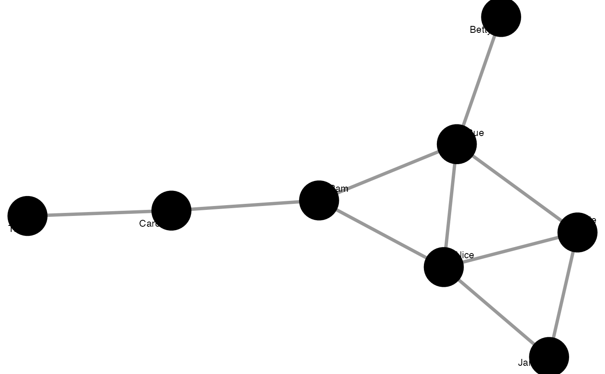

This function provides users with an easy way to graph (m)any network data for exploration, investigation, inspiration, and communication.
It builds upon {ggplot2} and {ggraph} to offer
pretty and extensible graphing solutions.
However, compared to those solutions,
graphr() contains various algorithms to provide better looking
graphs by default.
This means that just passing the function some network data
will often be sufficient to return a reasonable-looking graph.
The function also makes it easy to modify many of the most
commonly adapted aspects of a graph,
including node and edge size, colour, and shape,
as arguments rather than additional functions that you need to remember.
These can be defined outright, e.g. node_size = 8, or
in reference to an attribute of the network, e.g. node_size = "wealth".
Lastly, graphr() uses {ggplot2}-related theme information, so
it is easy to make colour palette and fonts institution-specific and consistent.
See e.g. theme_iheid() for more.
graphr(
.data,
layout,
labels = TRUE,
node_color,
node_shape,
node_size,
node_group,
edge_color,
edge_size,
...
)A manynet-consistent object.
An igraph, ggraph, or manynet layout algorithm. If not declared, defaults to "triad" for networks with 3 nodes, "quad" for networks with 4 nodes, "stress" for all other one mode networks, or "hierarchy" for two mode networks. For "hierarchy" layout, one can further split graph by declaring the "center" argument as the "events", "actors", or by declaring a node name. For "concentric" layout algorithm please declare the "membership" as an extra argument. The "membership" argument expects either a quoted node attribute present in data or vector with the same length as nodes to draw concentric circles. For "multilevel" layout algorithm please declare the "level" as extra argument. The "level" argument expects either a quoted node attribute present in data or vector with the same length as nodes to hierarchically order categories. If "level" is missing, function will look for 'lvl' node attribute in data. The "lineage" layout ranks nodes in Y axis according to values. For "lineage" layout algorithm please declare the "rank" as extra argument. The "rank" argument expects either a quoted node attribute present in data or vector with the same length as nodes.
Logical, whether to print node names as labels if present.
Node variable to be used for coloring the nodes. It is easiest if this is added as a node attribute to the graph before plotting. Nodes can also be colored by declaring a color instead.
Node variable to be used for shaping the nodes. It is easiest if this is added as a node attribute to the graph before plotting. Nodes can also be shaped by declaring a shape instead.
Node variable to be used for sizing the nodes. This can be any continuous variable on the nodes of the network. Since this function expects this to be an existing variable, it is recommended to calculate all node-related statistics prior to using this function. Nodes can also be sized by declaring a numeric size or vector instead.
Node variable to be used for grouping the nodes. It is easiest if this is added as a hull over groups before plotting. Group variables should have a minimum of 3 nodes, if less, number groups will be reduced by merging categories with lower counts into one called "other".
Tie variable to be used for coloring the nodes. It is easiest if this is added as an edge or tie attribute to the graph before plotting. Edges can also be colored by declaring a color instead.
Tie variable to be used for sizing the edges. This can be any continuous variable on the nodes of the network. Since this function expects this to be an existing variable, it is recommended to calculate all edge-related statistics prior to using this function. Edges can also be sized by declaring a numeric size or vector instead.
Extra arguments to pass on to the layout algorithm, if necessary.
A ggplot2::ggplot() object.
The last plot can be saved to the file system using ggplot2::ggsave().
Other mapping:
configuration_layouts,
graphs(),
grapht(),
partition_layouts
graphr(ison_adolescents)

ison_adolescents %>%
mutate(color = rep(c("extrovert", "introvert"), times = 4),
size = ifelse(node_is_cutpoint(ison_adolescents), 6, 3)) %>%
mutate_ties(ecolor = rep(c("friends", "acquaintances"), times = 5)) %>%
graphr(node_color = "color", node_size = "size",
edge_size = 1.5, edge_color = "ecolor")
#> Please make sure you spelled `edge_size` variable correctly.
#graphr(ison_lotr, node_color = Race,
# node_size = node_degree(ison_lotr)*2,
# edge_color = "#66A61E",
# edge_size = tie_degree(ison_lotr))
#graphr(ison_karateka, node_group = allegiance,
# edge_size = tie_closeness(ison_karateka))